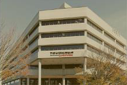
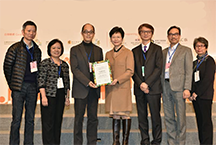

会社の歴史
TOYOKAWAの会社は日本のエンジニアリングの起源です。それは1959年に設立されました。活動の開始以来、同社は強力な農業機械用のディーゼルエンジンの生産を開始しています。海外での需要の増加により、大型で小型の農機具だけでなく、広範囲に及ぶディーゼルエンジンやガソリンエンジンの生産を習得しました。今日、TOYOKAWAは、日本の農業機械用エンジンの大手メーカーの1つであり、アジア、ヨーロッパ、北米、南米で最も人気のあるメーカーの一つです。ーゼルエンジンやガソリンエンジンの生産を習得しました。今日、TOYOKAWAは、日本の農業機械用エンジンの大手メーカーの1つであり、アジア、ヨーロッパ、北米、南米で最も人気のあるメーカーの一つです。
1963
1963年、ディーゼルエンジンは日本だけでなく海外でも有名になりました。 生産を大幅に増やし、米国を含む近隣諸国に輸出し、結果として代表的な事務所を開設した。

1971
1971年、同社は小型農業機械用の新しいビジネスエンジンラインを開発し始めました。 この方向性は今日、積極的に発展しています。
1976
1973年の石油危機は、省エネルギーの問題を提起した。 1973年以降、省エネルギーは日本のエネルギー政策の主流となった。 市場ではより簡単な操作で経済的なエンジンが必要でした。 同社は、独自の燃料システムを備えたエコノミックガソリンエンジンのラインを開発することで対応しました
1981
そして1981年には、競争力のある競争力のあるモデルとは違ったガソリンエンジン「豊川」のために、省エネルギーセンター「低燃費で高い性能」を授与されました。

1987
1987年に格付機関スタンダード＆プアーズから「A」格付けを受け、米国証券取引委員会による厳格な審査も受けました。 これらの結果を踏まえ、同年11月には、東京証券取引所に登録された会社となりました。
1989
1989年にIPO市場に参入することで、中国と米国に2つの新工場を建設し、物流コストによる生産コストの削減とこれらの国での販売拡大を可能にしました
1991
TOYOKAWAは日本機械工業連盟
"イノベーション活動のために"。
"イノベーション活動のために"。
1993
信頼性と長いサービス寿命は、ブランドエンジンの人気の基礎です。 これは、受領した品質証明書ISO 9001/14001によって確認されます


1998
1998年、8リットルの容量を持つ最初のディーゼルエンジン。 with。これは二軸トラクターで大きな人気を獲得し、販売のリーダーになる
2002
2002年、同社は計画を上回った。 現在、日本、アジア、ヨーロッパ、北米、南米の農業機械の15％以上が東洋エンジニアリングエンジンを搭載しています。 これらの地域で生産されるため、同社はエンジン供給のための多数の入札を獲得した
2005
今年は環境保全に貢献する企業グループとして、地球温暖化防止、持続可能な生活の創出、化学物質の管理、生物多様性の保全活動に投資する「エコファーストカンパニー」として認定されました。
2011
TOYOKAWA 2011は難しい年でした。強力な地震の結果、日本の工場の1つが苦しんでいました。この時期の最も深刻なもう一つの問題は、市場に悪徳な中国メーカーの豊川エンジンが多数登場したことです。低コストを追求する危機の状況において、消費者は購入時に品質にほとんど注意を払わず、後に彼らはそれを後悔した。このため、会社の財政状態に重大な影響を与えただけでなく、そのイメージも同様に影響を受けました。結局のところ、オリジナルとは異なり、コピーは高品質ではありませんでした。製造業者と売り手に対する訴訟は、結果の100％をもたらさなかった。危機的状況における会社の経営陣は、真剣に生産を近代化することに決めました。
2012
2012年には、日本の工場ではじめて、そして中国では世界的な生産の近代化が始まりました。同国の主要プロデューサーを支援することを目的とした重要な州補助金のおかげで、現代的な設備を購入して手数料を支払うことが可能になりました。生産プロセスは完全に自動化され、人的要因が排除され、工場結婚から脱却し、より信頼性の高いエンジンを生産することができます。また、これにより、製造コストが大幅に削減され、中国のカウンターパーツは、価格でさえ、もはや東京のエンジンのための重要な競争を構成しない。
2013
2013年には、同社の製品はスイスからの証明書を受け取りました
連邦環境局。 これは、 製造されたエンジンの環境安全。
連邦環境局。 これは、 製造されたエンジンの環境安全。
2014
2014年には環境安全の向上が示され、環境省の豊川事業所は「環境にやさしいエコロジー企業」として認定され、
2015
急速な経済成長と低価格の農業機械に対する需要の高まっている中国では、同社は二輪車用トラクターのエンジン生産用に追加の工場を建設中である。 また、競争力を高め、為替変動のリスクを回避し、需要増に対応するための供給能力をさらに強化するため、東京建設機械（無錫）有限公司 これにより、当社のグローバルシステムにおいて、需要の変動に即座に対応して大きな成功を収めることができます。
親愛なるお客様とパートナー！
豊川の創業から今日まで、良質の技術が広告なしで販売されているというアイデアを守り、満足しているパートナーと顧客がメーカーとその製品の成功を提供します。だからこそ、私たちのすべてのエンジンは動作するエンジンです。彼らは装置を所有する人々のために設計されています。私は、創業30周年を迎えた今日、私たちが設立した会社の製品は、業界の旗艦と一線を画し、品質に劣らず、価格も勝っていることを誇りに思っています。30年の時を経て、困難を抱えていた時期がありましたが、私はチームを維持し、主なアイデアである、高品質で信頼性の高いモーターの生産を逸脱していませんでした。この考え方は、従業員の仕事に対する本質的なアプローチであり、企業の製品の各部門に具体化されています。私は将来の大きな計画を持っています。私たちのチームは、才能があり、意欲的で、効果的で、自信を持って、献身的な人々であるため、私たちのチームはそれらを実装すると確信しています。これまで私が達成したすべてのことに感謝しています。
会社の創設者
宮本綾子
1989年